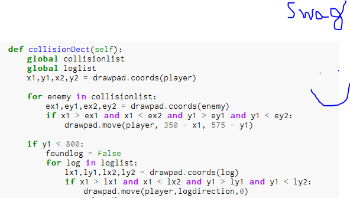

The objective of the game is to get the frog to the lilly pad on the other side of the map. The frog however will have to face some obsticles including one can and four truck. The frog will also jump from one moving log to another in an attempt to find his way to the saftey of the lilly pad.
The hardest part of the game for us was the collision detection. The graphing was done quickly and effeciently but then we switched to coding the collision detection and that took forever. The way we solved this was pulling from previous labs and working our way through it and in the end im not even sure if we really did get it done. We tried our hardest and thats all matters though.
This is a gif of the game in which the cars and logs move and the frog dodges them.

This is what happens when you die.

This is a snip of code which is collision detect where we had a lot of trouble.
In this code a list of objects is put in, so when the frog hits them it moves back to the beginning.
Collision Detect was very difficult because indention was important and many Syntax errors occured.